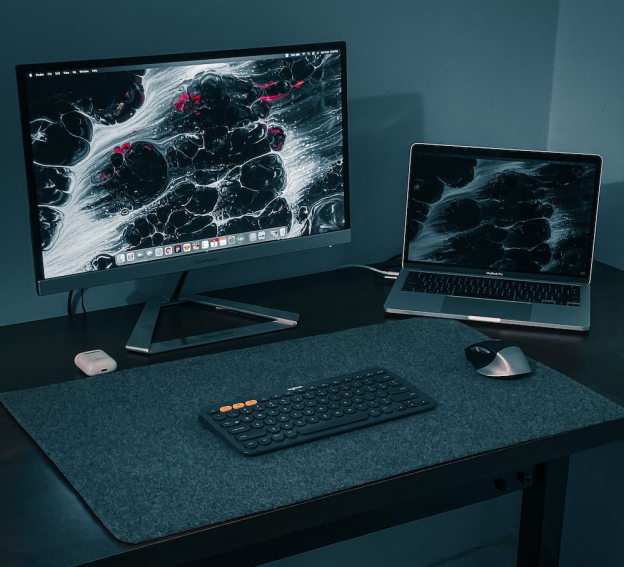

Your Overlay Text
Here lot’s of Happy couples that we have done their memorable day clips as Cinematography. Hope you enjoy all couple's videos

Overlay Text 1
Bottom Text 1
Overlay Text 2
Bottom Text 2
Overlay Text 3
Bottom Text 3
Overlay Text 4
Bottom Text 4